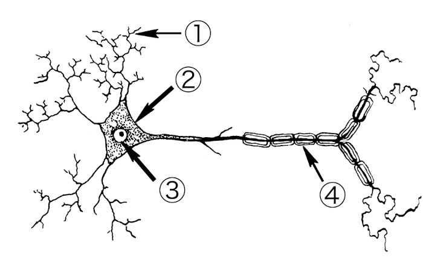
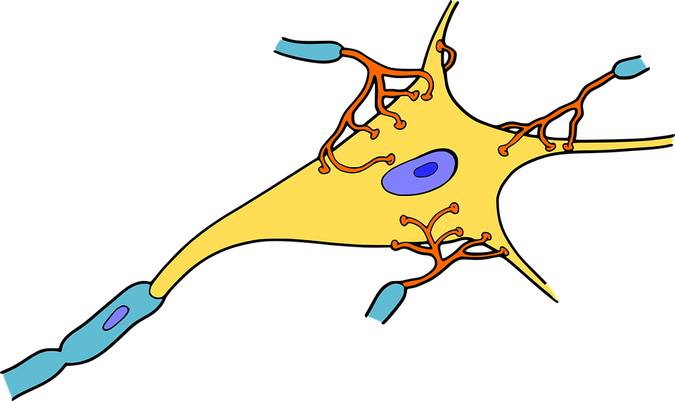
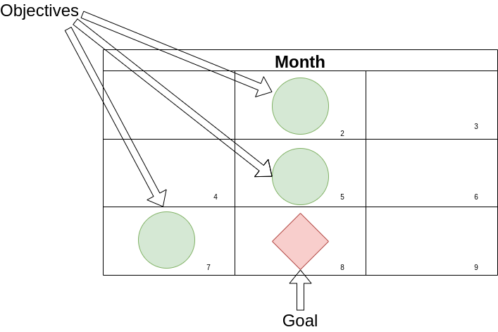
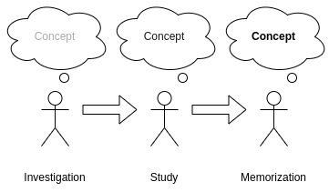
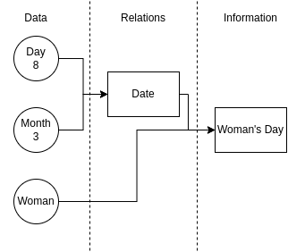

Autor: Valdivia, Sebastián Ricardo.
CC BY-NC-SA 4.0
This work is licensed under a Creative Commons Attribution-NonCommercial-ShareAlike 4.0 International License.
Dedicated to all those who, in the face of any difficulty, chose to keep learning.
As a child, my mother urged me to study, and for a considerable stretch of my life, I regarded this task as the mere memorization of answers to exams, only to promptly forget them once the obligation was fulfilled. It wasn’t until my teenage years that I encountered a semester-long course called ‘study techniques.’ Here, I was instructed to read, underline, reread, and rewrite my underlined notes. While this method improved my exam scores temporarily, the knowledge would invariably fade away afterward. Historical facts became meaningless dates, equations dissolved into scribbles, and once-learned language concepts transformed into loathsome words drifting in my memory. Remarkably, I continued to pass with excellent grades.
However, my understanding of the true cost of this approach only dawned on me when I entered engineering university. The initial exams were designed merely to assess my knowledge level, but when I read the questions, I recognized them from somewhere in my past. I had known them years ago, but now they seemed vaguely familiar, and I struggled to provide the correct answers. My score? A mere 20%. As the coursework advanced, my situation deteriorated. I needed to grasp earlier concepts to excel in exams, a prospect that had never piqued my interest. Moreover, the study techniques that had served me previously proved inadequate in the face of the substantial amount of information I now encountered. I barely managed to pass, and by the time I reached my second year, where retaining previously learned concepts was essential, I faltered. Everything I had learned the prior year had vanished from memory.
I began to doubt my abilities, believing I was inherently incapable and that my brain was somehow inferior. I ultimately abandoned my university studies, deeming them a waste of time. My goals shifted, and I started working as a barista. However, my thirst for knowledge remained unquenched. Numerous subjects, particularly programming, continued to captivate my interest. Encouraged by this spark, I decided to embark on a self-guided journey to deepen my understanding of the field.
This path was fraught with stumbling blocks, errors, and challenges, but gradually, programming started to make sense. Beyond that, I began to discern a pattern in the learning process. I turned to dynamic tutorials that emphasized hands-on experience over the rote memorization of definitions or complex theories. This new approach kindled a fresh curiosity within me: How do we learn?
I set out on a quest to uncover alternative methods of studying. My initial task was to gather information on effective study techniques. I scoured the internet for articles, acquired books of interest (often more than necessary), consulted online communities, and experimented extensively. My endeavors to learn programming proved particularly illuminating; while some approaches failed, others succeeded. I persisted in refining my learning skills until I gained the confidence to reattempt formal education. This time, I did not falter. Each passing year proved more productive, and I found myself surpassing both my peers and even some of my professors. Many attributed my success to sheer intelligence, willpower, or time spent studying. Yet, they were mistaken; I had simply mastered the art of effective learning.
Over time, I noticed a significant enhancement in my comprehension abilities. I grew restless studying a single topic and began to tackle two or three simultaneously. I explored diverse disciplines, from programming and languages to carpentry, electricity, electronics, mathematics, and many others, including seemingly unrelated subjects like beekeeping and horticulture. This multifaceted approach felt effortless and enjoyable, compelling me to continue my eclectic learning journey.
What remains paramount is my unwavering commitment to learning how to learn. I reached a juncture where I amalgamated my accumulated knowledge, formal education, and independent discoveries to assist others in achieving their learning goals.
But why do we learn? Often, people associate learning with institutions, degrees, and job prospects, neglecting the value of learning for its intrinsic worth. Learning instills new values, nurtures our ethics, enhances our productivity by acquainting us with new trades and hobbies, imparts wisdom from history to prevent repeating past mistakes, and so much more. Learning doesn’t merely boost our intelligence; it shapes us into better individuals.
From infancy, we begin to cultivate the skill of learning. Babies utter their first words after repeated exposure to their parents’ voices, and this process continues throughout their lives. Schooling exposes them to new knowledge simply by observing teachers, acquainting them with games by watching peers, and etching book plots into their memory through reading. This childhood development lays the foundation for various learning styles and information retention techniques.
Within the pages of this book, we embark on a profound exploration of the intricacies of learning, delving deep into the modus operandi of our minds. Our mission is to unravel the secrets of understanding and memorizing information with the ultimate goal of enhancing our cognitive capabilities and extracting knowledge in the most lucid and meticulously organized manner.
In this quest for cognitive mastery, we encounter a rich tapestry of methods and intricate systems meticulously crafted by experts. These tools serve as catalysts, propelling us toward heightened efficacy in our learning endeavors. Learning, as we come to appreciate, transcends the mere act of reading; it demands an amalgamation of willpower, strategic finesse, relentless practice, and the wisdom to discern the most effective pathways to knowledge acquisition.
The voyage of recollection, an integral facet of the learning process, unfolds as a cyclic odyssey, replete with twists and turns, for which we must be well-prepared. Once we acquire knowledge, our brains undergo transformative processes akin to molding clay into new forms. However, this remarkable property of neuroplasticity comes with its own set of challenges. The specter of forgetting looms, albeit not indefinitely or abruptly. Under specific conditions, the precious fruits of our learning can slip away. To combat this formidable adversary, we wield a powerful weapon: the art of notation. Within our arsenal, we find an array of mechanisms, both simple and intricate, swift or detailed, all finely tuned to transcribe information with precision and purpose.
For those who may question the efficacy of the written word, there exists an alternative avenue of learning: the art of meticulously crafting organized visualizations. Diagramming, as we shall discover, demands an intimate understanding of the nuanced art of explicit and systematic description within a pristine canvas of blank space. Yet, be not deceived, for the mere act of tracing lines upon a canvas is insufficient to conjure meaningful charts and diagrams. What lies at the heart of this endeavor is an adherence to order and an unwavering dedication to the art’s guiding principles and regulations.
In essence, this odyssey through the realms of learning not only equips us with the tools to ascend the peaks of knowledge but also instills a profound sense of reverence for the process itself. Learning, we come to realize, transcends the confines of institutions, degrees, and employment prospects. It is the crucible in which we forge our values, nurture our ethics, and expand our horizons. Learning transforms us into not just more intelligent beings but, fundamentally, into better individuals.
This book was written with the objective of guiding a software project but is unrelated from it.
The term “tabula rasa,” Latin for “blank slate,” carries profound philosophical significance. It encapsulates the notion that each of us enters the world devoid of inherent knowledge, akin to an empty canvas, and it is through the journey of life that we inscribe our experiences upon this mental canvas, gradually etching the tapestry of our understanding.
The origin of this term draws a compelling parallel to a tool of antiquity—the Roman wax tablet. Employed by the Romans in the 1st century B.C., this tablet could be molded afresh with a stylus, permitting the erasure of previous writings and enabling the opportunity to transcribe anew. Its very emptiness led to its designation as “rasa,” signifying the absence of preexisting inscriptions.
In essence, “tabula rasa” stands as a testament to the malleability of human consciousness, where the imprints of life’s experiences continually shape and reshape the contours of our understanding, rendering each of us a unique work of intellectual artistry.
Philosophers employed this expression to symbolize the commencement of learning from birth, following the theory of empiricism, which posits that we acquire knowledge through experience from the moment we are born. Here, we align ourselves with this ideology, keeping our doors open to all. What is explained remains indifferent to one’s origin, current circumstances, reasons for wanting to learn, or any other factors.
Writing the Tabula Rasa is a metaphorical title for the content we will delve into. Firstly, we will approach it’s figurative meaning, aiming to comprehend how the human mind operates and how individuals acquire knowledge. After this metaphorical exploration, we will take a literal approach and craft the ‘table’ creating a record of our knowledge to facilitate recollection and interpretation by others.
The text is structured into three primary sections, each addressing key questions: How does our brain function? How do we learn and memorize it’s concepts? And, lastly, how do we disseminate and organize this information?
In the first section, we will delve into the biology of neurons, dissecting their components and understanding how they interconnect to construct mental models. We will also explore the concept of ‘attention’ and the pivotal role of cultivating effective study habits.
The second section delves into the realms of study, memorization, and information retrieval. This domain is vast and intricate, reliant on the application of techniques across a process that leads to the comprehension and interconnection of concepts, culminating in their retention within memory. This journey takes time and cannot be accomplished in a single night.
Finally, we elucidate the process of disseminating information to make it reusable, both for oneself and others. We analyze the abstract organization of information, emphasize the importance of precision in writing and present various methods for articulating ideas effectively.
I have endeavored to present this book in an accessible manner, though it may still pose challenges for those less accustomed to extensive reading. Whether you are an expert or a novice, remember: strive to maintain a holistic perspective. Keep in mind the previously discussed topics and return to them as needed. Comprehending the connections is paramount to grasping the underpinnings of more advanced sections.
The human brain is the most intricate organ in the animal kingdom, brimming with mysteries that have intrigued various disciplines dedicated to unraveling them. The task of thinking is carried out by tiny, specialized cells that work together in a structured and organized manner, much like bees. Each area of this remarkable organ performs a highly specific function.
But why should we be interested in knowing this? This is where knowledge is brewed. Understanding how it functions enables us to comprehend how it operates, what it’s limits are and how it thinks. However, the goal is not to become neuroscientists; people can drive a vehicle without being mechanics.
We will explore the composition of the brain at the cellular level as it forms systems, eventually culminating in something larger. We will focus on an organic perspective before delving into the workings of what we will cover in the second part.
The first step in comprehending the mind is to delve into the neuronal system within our brain, which enables us to think, remember, and understand. This peculiar organ located in our head is composed of several parts, each serving various functions. Nonetheless, our focus isn’t on knowing each part individually but rather on how they come together to form the human mind.
Before delving into the biological aspects, we will employ an analogy to ease the complexity, allowing us to perceive the operations of our brain from a different perspective.
Imagine the mind as a miniature, microscopic city inside your head, complete with people, streets and buildings.
These tiny inhabitants are so small that they can’t think much on their own. They can barely hold onto a minimal unit of information, a small piece of data, something as simple as a number from 0 to 9 or a letter. They are rather clumsy on their own, but they can communicate with each other. In groups, they can form words or even images.
Within the buildings, people gather to create ‘mental models.’ These models are ideas and concepts formed by connecting with notions we already know. They are always a work in progress: under construction, undergoing repairs or even being demolished. The city is in constant transformation and the models change shape.
Because the population is immense (approximately billions), they often form neighborhoods to develop concise ideas. Some of these neighborhoods connect with each other through streets and alleyways, linking models and creating larger and more complex ones.
In this city, you can reach anywhere as long as you are oriented and know the way. The streets that connect the vast urban area vary; some are fast, built with concrete, while others are rustic and abandoned, making navigation challenging. The city administration is responsible for these roads. When it notices a street is frequently used, it decides to pave it to improve traffic flow.
Only a few experienced individuals can navigate the metropolis, managing tasks such as overseeing changes, organizing neighborhoods, and more. This work is carried out by our conscious and unconscious states, which are responsible for reasoning.
These tiny individuals we are referring to are called neurons.
Neurons are small cells that make up the human brain. They are also found in other parts of the body, forming the central nervous system. There are billions of them in each of us. Most of them have the job of interpreting our senses (sight, hearing, touch, taste, and smell), carrying information from the organs to the brain.

They have a particular shape, as seen in the image. They are composed of a body, arms, and legs. The body (2), also called the soma (the wider part on the left), mainly contains the nucleus (3) where our DNA is stored. The legs or dendrites (1) receive signals and are located around the nucleus. Finally, the axon (4) exits the center and is responsible for transmitting the signal to other neurons through synaptic buttons. Considering their parts, it’s evident they have a system to communicate among themselves, known as synapses.
There are various types of these tiny cells, but the ones that matter most to us are those that perform the “thinking” task.
Synapses serve as the communication junctions between neurons. These minute gaps exist in close proximity to the next neuron, yet they never actually touch. Within these gaps, the axon buttons surround the dendrites.

The interaction among these entities creates intricate networks of neurons engaged in a continuous “dialogue,” forming thoughts through electrical or chemical impulses. When one neuron seeks to connect with the next, it sends a signal, and the receiving neuron transmits it to the subsequent one, creating a chain until a concept emerges.
When a group of neurons communicates synchronously, they form an engram. This can be likened to a house, building, or apartment within our small city. Here, working in harmony, they construct a small unit of information that can be used to shape a memory. This connection entirely relies on the impulses sent from one to another.
As engrams are usually not substantial enough to form complete models or memories, they maintain pathways or roads connecting to other engrams in different locations. These pathways are the streets linking neighborhoods, where energy flows and constructs a vast network of neurons collaborating. The more activity along these pathways, the stronger the connection becomes. This process is known as consolidation, involving the improvement of these pathways. It’s a task that requires time and resources from the body to accomplish. These neuronal pathways are responsible for managing memory through the hippocampus.
The hippocampus is a part of the brain where a significant portion of memory-related tasks takes place. It is named after its resemblance to the seahorse. This organ can be thought of as the city’s computing center.
It is responsible for remembering facts, events, and orientation tasks. It possesses a substantial amount of gray matter where axons lack myelin, which makes it slower but capable of processing information. Due to its structure, which is composed of somewhat different neurons, it is considered the site where ‘reasoning’ often occurs. For this reason, the hippocampus plays a crucial role in reasoning and the formation of abstract mental models.
In summary, the hippocampus is a crucial hub for memory processes in the brain and deserves a word. It’s responsible for encoding new information, consolidating it into long-term memory, linking related memories, and facilitating their retrieval. Without the hippocampus, our ability to form and recall memories would be significantly impaired, making it an essential and fascinating part of our cognitive system.
Similar to the dynamics in our miniature city, the brain is in constant flux, a phenomenon known as neuroplasticity. This is the time when construction work takes place.
This characteristic states that our brain can adapt and create new connections between neurons. This is why we describe the mind as reconstructive and involving multiple processes to transform itself.
Without this attribute, the brain would be fixed and unchanging, much like that of an insect. It would always perform the same basic tasks, such as eating, or perhaps a few more complex yet essential and routine ones.
This change doesn’t happen overnight, nor is it extraordinary. It’s akin to a plant’s growth from sprout to fruit, taking months of effort. It’s during the night when it grows the most. This transformation necessitates healthy habits, which we will explore in A.4.1 (Mental Health).
What’s the best way to attach something to your mind? This is a complicated question. There’s no simple way, no single trick, to remember something forever. If we analyze everything in our heads, we don’t have memories of our first days of life, but we do remember yesterday, as long as you don’t have any brain damage. Nothing in memory is eternal; always remember that it’s constantly changing, archiving the old in the back room, making room for the new and more needed at the front counter.
But have you noticed that you can remember something like your birthday every time and every year? If you delve into this topic, you’ll realize it happens for these reasons:
Break this idea to decipher the trick and you’ll see the pattern: it’s recurrent, linked to other events, and accessible. This will be the key to memorization. But to find out how it happens, we must first understand the functioning of memory and it’s parts.
When we talk about memory in general, we refer to the mental process of encoding, retaining and retrieving information stored among our neurons. These tasks are performed by its parts. To understand these parts, we could compare memory to a backpack with 2 pockets.
The first pocket (1) is much more accessible, small enough for us to reach its contents with our hand and easily retrieve something like a pen or a piece of paper. Obviously, there isn’t much space; we could hardly fit a notepad. For that, we have the other pocket (2). This larger space allows us to put books, folders, calendars, even our laptops; full of information. The problem is finding and retrieving something from here requires a somewhat more tedious search. Just like this backpack, the mind has these 2 types of pockets.
Memory operates in two main parts, in addition to a memory that processes the senses and retains the information for a few seconds. These are:
Sensory memory or register: Operates on what is captured by the senses.
Short-term storage memory: Working memory.
Long-term storage memory: Information deposit system.
We will focus on the last two.
This memory is responsible for processing or working with information. It is located in the prefrontal cortex just above the eyes.
It usually has 4 slots or spaces where it places the information. The quantity varies from 3 to 9 spaces. Note that having fewer spaces doesn’t make us less capable; on the contrary, it helps with creativity as we rely on forming relationships with information in long-term memory. This method of creating relationships is the way to answer complex questions with so little space in such a short time. We can form connections with previously acquired knowledge and process all this information together.
As a person does not focus, it “drops” the information, forgetting about it. It takes around 10 to 15 seconds to discard whatever is occupying it. To avoid forgetting, focus is necessary. Methods can be used to keep it longer. If no activity is done, it will simply be lost and needs to be revisited.
A method that helps keep pieces of information active for longer in this memory is phonological loops or repeating what we are trying to remember again and again to keep it active. Another method is visuospatial, where information is stored visually, with images located in a space. These procedures are not for archiving information in the long term, just to keep something a few seconds longer in working memory; we’ll see them in detail later.
In this memory, information is stored, knowledge, mental models. The limit is immense; it can accommodate a large amount during the course of our lives. Still, everything depends on the ability to retrieve it, that is, to bring it back to working memory for use. This practice is important for improving our information retrieval.
This memory, unlike the other, does not have an exact location; it is dispersed throughout the brain but is concentrated in the hippocampus. This leads us to think that memory uses a large number of neurons in the brain’s gray matter. Each piece of gray matter forms a set of neuron links that create a memory.
To move something from working memory to this long-term memory, it must go through 4 stages:
Encoding: At this step, the brain transforms facts or concepts into models that can be interpreted by the brain.
Consolidation: Once the models are obtained, the connections between neurons must be strengthened for the next step.
Storage: Once consolidation is complete, the models are firmly placed in the brain after a few hours, during which the brain adapts the neurons through its plasticity.
Retrieval: This stage is somewhat obvious but separate from the others. It involves simply retrieving the stored information to use it.
An advantage for consolidation is to use what you already know and relate it to new knowledge. It acts as anchors, just like a spring, forming unions and pathways that connect them to the new ones. The more of these points one has, the easier it is to understand and memorize new information. It’s better to study with a broader view rather than trying to memorize details.
The effort to remember information helps improve the connections in this memory. Whether it’s exercises with or without assistance or clues to trigger memories, performing these tasks greatly helps strengthen the engrams. Trying to remember, without looking at what you’re searching for, is one of the most effective ways to improve the information’s accessibility.
Once you’ve understood the information, consolidation begins; in this stage, neurons start creating an engram. Once the process is completed, it’s stored, but to keep the engram active, you need to practice retrieving that information and keep it active. If you don’t use it, you’ll forget it.
This task is what we seek to perfect. It involves finding the right information as quickly as possible, which is not so simple.
The mind doesn’t work in a linear fashion; by this, we mean it doesn’t start a sequential search in a list of memories. You can think of it as having a piece of fabric of an unknown color and wanting to find out which one it is from a list; you might go on comparing the colors on the list one by one until they match. This method is slow and ineffective. If the brain conducted the search this way, it would take hours, comparing it to the thousands of memories it stores.
To describe its search method, we can see it as accessing any part of the “list” searching based on relationships or classifications we’ve made when learning. What it does is look for associations with more active topics in long-term memory. If it can’t achieve this, it is considered forgotten.
The best way to improve our memory recall ability is through practice. The effort to retrieve information makes neurons more active. The more we try to remember, the more skilled we become, and later in section B.4 (Memorization), we’ll see techniques and exercises based on this theory.
Forgetting or failing to retrieve information can affect us in many ways. When people usually use this word, they refer to the failure or inability to remember information that has gone through all the stages listed in A.2.2 (Long-term). This can happen mainly due to the lack of use of these resources or biological factors (diseases like Alzheimer’s affect long-term memory in this way).
The effect of forgetting is not instant; it develops over a period of time. Reviewing and practicing memory at intervals helps keep the neurons holding the information active. The solution is managing the timing of our reviews to prevent forgetting, something we’ll discuss in A.4.3 (Discipline).
Chunking is a cognitive process used to organize and group information into smaller, manageable units or “chunks” in order to improve memory and processing efficiency. It’s a valuable technique for dealing with large amounts of information more effectively.
With this technique, we can manipulate large amounts of data stored in our minds. Since we only have about 4 usable slots in working memory, it limits the amount of information we can consider at any given time. Fortunately, human brain evolution acquired the ability to consider a context of information stored between both memories. The goal of forming chunks is to memorize something without needing to remember every detail.
Forming a chunk is not that simple. When starting to build a chunk, concentration is required, focusing only on what we have in our hands. After having the material in working memory, we step away from it to see it from a different perspective. With repetition and spaced practice, we can solidify concepts entirely.
To archive chunking we can follow the following process:
Identify Key Concepts: Begin by identifying the key concepts or pieces of information that you need to remember. These can be words, numbers or any type of data.
Determine Chunk Size: Decide on an appropriate chunk size. This can vary depending on the type of information and our own cognitive capacity. Common chunk sizes include groups of 3 to 5 items.
Create Meaningful Groups: Group related pieces of information together to form meaningful chunks. This could involve grouping numbers, words or ideas that are conceptually related.
Use Patterns: Look for patterns or connections within the information that can help you create chunks. For example, if you’re trying to remember a series of numbers, you might group them by digits or by their meaning.
Practice: Once you’ve created these chunks, practice recalling them as distinct units. This helps you remember the information more effectively because you’re dealing with fewer, more meaningful pieces.
Let’s see a simple example of chunking: how to remember phone numbers. When remembering a phone number like 123-456-7890, you might chunk it into three parts: “123” as one chunk, “456” as another, and “7890” as the final chunk.
Chunking is a versatile cognitive strategy that can be applied to various types of information, from phone numbers and dates to complex concepts and ideas. It’s a useful tool for both learning and everyday tasks that involve remembering and processing information efficiently.
Memory plays a crucial role in how information is related; it’s necessary to understand its operation. Together, both memories can manage complex streams of information, allowing us to understand and reason. Changing perspectives leads us to the next part.
Thinking or reasoning involves using all our knowledge to establish connections with the environment and draw a conclusion. Obtaining this conclusion is what leads the hierarchy of operations to achieve what we call intelligence. Its purpose is to obtain an understanding or make a decision correctly or as closely as possible. It is important because it allows us to form and comprehend mental models by appreciating information from our experiences.
Experience is formed by relating and processing facts stored in long-term memory. When we were young and learning to walk, if we fell and got hurt, we used reason to understand that the negative consequence, pain, was a result of the fall. From this reflection stored in our memory, we form all the relationships that arise from such an experience. For example, falling hurts, and over time, when we try to learn to ride a bicycle, we draw from the same experience: falling will hurt - we should avoid falling. Achieving this conclusion does not require actually falling to realize it but relies on similar events that have already occurred and exist in our memory. So far, we’ve seen basic examples, but reasoning can be performed with complex units of information. The mind can process experiences and make judgments to understand facts; it only requires analyzing relationships based on knowledge stored in memory.
When dealing with data from various sources, such as physical or abstract modalities, and not finding relationships due to not having fresher memories, more effort is required. This effort is created by combining the act of freely recalling and associating knowledge in various ways until a conclusion is reached. This activity can take time during which the mind is working to find a meaning, seeking to perceive its functionality or significance through intuition.
This human activity is not constant from birth; it is a skill that is learned, developed and whose proficiency requires training. It is something all animals possess to varying degrees, but humans have taken it as far as possible. We depend on it to understand what we study; the better our reasoning, the more effective our study will be.
The work of processing acquired information is related to the level of predisposition we have when performing this task. Whether with a high or low level, focused or not, we are working in the same way but in two different ways. One way to see it is as a shift from a more closed perspective to a more open one. What do we mean by these perspectives? There are two modes of thinking, focused and diffuse. Although it may seem that only the first is effective, the reality is that both are equally important for effective studying. Let’s look at them separately.
The first mode of thinking is focused or concentrated. This should be the most obvious one, and we recognize it instantly. We realize it because when we use it, we are processing information with our full consciousness, expending more energy.
When focused, the experiences and knowledge we use are active. During this time, the information to be used is located throughout (or almost all of) working memory, connected to archived memories. We are reasoning about it, seeking new relationships, meanings and questions. Although we only use this information and only this information as a closed group, not with a more open perspective. We are limited, but we achieve greater depth.
Being focused requires an effort to avoid distractions from the environment, which affects the ability to maintain the focused state. We need to make an effort to stay in this mode, what we call sustaining attention.
When talking about attention, we refer to the cognitive process of selecting information and focusing on it for processing by our minds. By definition, it involves focusing on a single stimulus or specific location and the ability to stay there. When we pay attention, we select the information we want to process and put our cognitive capacity at the service of this task. It applies to the four available slots in working memory, plus three or more additional slots that are prepared.
Environmental variables have the potential to affect attention positively or negatively; they can help us stay focused on the material or distract us from it to pay attention to other things. These variables can be sounds, images, movements, among others. Colors are a crude example of a variable that can be both positive and negative: if we see keywords highlighted in red in a text, we maintain focus on the text. However, if we had dozens of colorful drawings around the text, they would grab our attention more, diverting us from reading. It is important to manage variables so that they are on the positive side of the scale, helping rather than distracting.
A more subtle variable is the mental challenge posed by the material. Depending on the level of difficulty, attention varies. If we deal with very complex material that is beyond our reach, not understanding a large part of it, it will be impossible to concentrate. Similarly, material that is easy and/or already familiar may also lead to a loss of attention because the brain does not need to work at 100%. Ideally, you should maintain a work pace that requires effort, with challenging but not unattainable material.
Cognitive loads refer to how much the study material demands from working memory. This is what we will call the unit of measurement for the mental effort required to interpret the material. The higher the cognitive load, the more concentration is required. If we want to make studying any topic easier (for ourselves or others), we need to consider what the load will be.
What most affects the load is the presentation of the material. Depending on how difficult or complex the material is and how it is presented, the load will increase. Therefore, the material’s load can be affected by two parts: intrinsic (how easy or difficult the material is) or extrinsic (how it is presented). The ideal intrinsic load is at an intermediate level between easy and difficult to maintain our attention in the task. On the other hand, the extrinsic load is better when it is simpler. Knowing the type of level we are facing makes us aware of the effort level we will require and, with some experience, calculate the time it will take to learn.
Another load that also affects attention is perceptual, which is closely related to attention. Unlike cognitive load, which uses the mind, perceptual load uses the senses to focus. Sounds, images, among others, affect our level of concentration. The more distractions there are, the higher the perceptual load. Reducing anything that affects attention will help you stay focused.
The second mode of thinking is the opposite of being focused. In this mode, the mind wanders through thoughts, discarding concrete ideas and allowing new ones of any kind to flow. Here, we are not focused on anything in particular; we let distractions take us where they want, and we let the mind do what it needs.
In this state of thinking, relationships with other knowledge are better constructed. During the diffuse mode, we “play” with concepts, moving them and trying to connect them with others, forming analogies and breaking them down to see how they are structured. This allows our creativity to be involved in studying.
Although we may think we are wasting time, the brain continues to work on the problem. Often, we feel guilt, a negative emotion, for entering this mode, believing that it is laziness, which is not true. Negative emotions do affect performance. Naturally, studying requires a good deal of focus, but we must remember that leaving this mode is also essential for aligning ideas and making progress.
Entering the diffuse mode allows the brain to explore more alternatives. We engage creativity and our knowledge in its entirety, something that would require much effort in the focused mode. Reaching the diffuse mode costs nothing; it is natural and often happens without us seeking it.
It is common to feel that thoughts from within us invade our attention and lead us to daydream. At this point, the mind enters the diffuse mode without us consciously seeking it. It often happens autonomously, and even though the practice of concentration helps prevent daydreaming, it is inevitable.
We all have the problem of losing focus on what we are working on because our minds seem to change the subject. Although it may seem tedious and ineffective, it is a way for the brain to request a break since the mind gets tired, meaning it exhausts its concentration energy. How many times has it happened that even with the utmost determination, we cannot focus on the text we are reading, and we exert so much effort that it causes a headache? Like an engine, the human mind needs to “cool down” after a work cycle. If we use our energy for too long, we will only tire ourselves out to the point where we are not efficient. This is why staying up all night to study for an exam the next day is futile, and it does not help with long-term learning.
These distractions that separate us from studying are a sign that we are tired. It is not necessary to interpret these signals to realize it; we often think about how tired we are ourselves. At this point, the next step is to take a break and take care of ourselves; the mind will continue working in its way.
The more we study, the longer we will be able to maintain the pace. We can interpret it like training for a marathon; reaching the first 5 kilometers will require practice, learning, and each day we need to achieve a few meters further. The only way to improve is to periodically make a bit more effort, achieving better results.
In this conclusion of the first part, let’s talk about the well-being of the mind. A certain myth among students of all levels believes that getting tired and exhausting the mind is common, part of the student culture. This is false, we can verify it; during one day we make an effort and on another, we take the necessary time to avoid getting tired; we will remember and understand more in the second case. No matter how much information has been amassed, the human brain has a limit and, like a muscle, it needs to rest from time to time to grow.
Stress is one of the worst enemies of learning. It is true that in life there will always be situations that push us to the limit, especially in work or personal life. During study is when one must apply what they know, and what they will learn will be the results. When we study non-stop for an exam, do you know when everything we have fresh in our memory shifts to long-term memory? In the exam itself. As soon as we read the question and look for the answer in our mind, the information becomes related to the event; we use the ability to remember and interpret what causes the memorization of the information. If we fail in the exam, we will learn from the mistake, and we will know more for the next time, perhaps more than those who passed it on the first attempt. There are no losers in studying; the only ones who lose are those who don’t try.
The brain is an organ and, like any other, requires care. But it’s not a conventional organ, it has some special care needs. These are emotional care. Learning requires a joyful and motivated state to be carried out. In this text, we will not delve into the reasons why get these states but instead who they affect study.
Negative emotions and stress are a big problem. Emotional well-being affects thinking performance. Harmful states that affect thinking, such as depression, increase the difficulty of concentrating, making studying impossible. One’s behavior will change depending on how they feel; if they feel bad, their energy will turn against them, which will not help them sit at the desk. For these difficulties, learning requires a positive emotional state.
Controlling these problems is essential for effective studying. Personal problems have their own origin and are not within the scope of this book, however, the concern and stress caused by studying deserve a mention. The reality is that the culture of academic institutions and society has created a demand for students that causes anxiety. The need to obtain high grades and carry out large projects in a short time is (partially) present, with a back and forth of guilt between students and teachers. In learning, there is no requirement; the establishment of requirements to pass is not part of the process, they are independent of each other, not passing does not mean you have not learned. We have to abandon the mindset of learning to be evaluated and do it to improve ourselves.
Just as we take care of mental health, physical health is closely related to the mind. The brain depends on the body to survive. A balanced diet affects good blood circulation and the energy we have. Eating a variety of foods helps maintain a healthier metabolism, allowing the mind to work in better conditions. Obviously, we cannot ignore another factor, which is physical activity, where hormones are released, leaving us more active and content. Long-term well-being reduces age-related decline, preventing the death of neurons over time. The brain is part of the body, taking care of one is taking care of the other.
Lastly, and perhaps most importantly to consider in the prosperity of learning, is sleep. While we sleep, our mind changes and solidifies the knowledge learned, let’s remember that it possesses the property of neuroplasticity. Let’s imagine that a person from the miniature city needs to renovate their apartment. At what time could they do it if they are working all day? During sleep is when neurons take the opportunity to renew, after a study session and a good night’s sleep, the dendritic spines grow to strengthen the links between neurons. Another factor we find during operating hours (while we are awake), in the brain, toxins from brain waste are generated that remain between the neurons; during sleep, they are eliminated, cleaning the organ of them. For these reasons, sleep is the moment when we end the learning cycle; without sleep, we could never reach completion.
Having good health may not be all that is necessary to feel energized. In addition to natural energizers like exercise, the desire to complete our own goals also generates energy. Some factors come from the awareness of the mind that affect willpower when it comes to studying. These are the incentives that provoke the curiosity that learning satisfies.
The tingling of intrigue triggers the will to learn. This desire to discover is the source of energy, what fuels the determination to go through books, articles, and other texts in search of the answer to “What is it?” and “How do I learn it?” These are the questions that guide learning, but now we want to know why we ask them.
Working on a project or studying a subject that identifies us gives a feeling that makes us move forward and maintain the effort in it; this feeling is interest. Seeing something without interest and believing it doesn’t benefit us drains energy. It’s like having to dig a hole for no reason; it annoys us, but if we do it to plant a tree, it gives it meaning, usefulness. When we awaken this interest in a project, we develop an attraction to the subject. We start setting goals, organizing, researching, getting in touch with other people related to the topic. We participate actively. This participation improves performance and sends the experiences gained to memory. It is important before sitting down to study to consider what makes the topic interesting for you.
Being emotionally connected to the study generates excitement, leaving us physically and mentally alert. This gives us desires, the desire to study or carry out a project. This energy is motivation. This same excitement directly affects concentration, positive emotions, and the energy with which we tackle the work. Motivation acts as sails to our sailboat that we use for learning.
Inspiration is an important tool for igniting motivation. Being inspired consists of having creativity and/or willpower to continue. Unlike interest, inspiration does not come from within but from external factors that trigger a reaction in the mind. These factors vary in type; they can be personal such as achieved goals, completed tasks, values; or they can be external like achievements of personalities, quotes, reference works, and many more. These factors can also make connections between solutions to the problems we face and others that have already happened, showing us the way to go. This is why the function of inspiration is important because it not only motivates but also helps to face difficulties with ingenuity.
Although the benefits they bring are many, motivation can be lost if we do not maintain the momentum generated. Interest wanes over time; humans always long for new and attractive things; children abandon the toy they have in their hand when they see a new one. Losing momentum is when thoughts of dropping out arise.
In case this is the first time you encounter this word, it basically means: putting things off for later. Many times, students avoid working on their projects or studying due to procrastination. Leaving everything to the last day does not allow the neurons to develop to solidify new knowledge. Therefore, it is necessary to avoid procrastination in one way or another.
The solution is not to torture ourselves to produce as much as possible. If we work until we are overwhelmed, the brain will see studying like fire; it thinks that if you touch it, you will get burned, and it has in a way. Keep in mind that overwhelming oneself will affect our mental health, bringing new problems on its own. The end result may be complete abandonment of learning and failure to achieve our goals.
To avoid overwhelming ourselves with work, studying should be done in dispersed stages over time, and although willpower is important, something more is needed to achieve it.
Discipline creates a constant work rhythm. It is persistence that leads the runner to finish the marathon, continuing no matter what happens and as best as they can. Frankly, building discipline is not a simple task. It takes time, organization and effort. This time it will be okay to be obedient; it will be necessary to develop the routine we need. Acquiring a strong personal discipline to carry out daily tasks will have its reward. However, establishing this rhythm is like pushing a rock up a slope; although it takes effort to get it to the edge, once it is downhill, it will move by itself, whereas working without discipline is a path full of curves and holes, difficult to traverse.
Everything we push for is a victory for ourselves and not for others; we are the masters of our own mind. Taking on the task of becoming disciplined is always for our own benefit. It is true that being disciplined is seen as both healthy and enslaving, depending on the values of the observer. Nevertheless, as it is pointed out, it does not change the fact that its usefulness is widely beneficial in study.
Once we decide to establish a study routine, we must bear in mind that it is not done overnight. It involves meeting certain objectives until it has its own momentum. These tasks will form a study habit, which will be a link in the chain of persistence.
A habit is a routine or practice performed regularly or automatically. The idea behind developing the habit of studying is to promote the recurrence with which we return to the subject of study; we already mentioned that the most effective study methods (which we will see later) include spaced repetition over time. Additionally, maintaining energy with only motivation and interest is not a practical strategy; they tend to be inconsistent. Having the habit of learning and reviewing every day unconsciously is an ideal method for dealing with the problems that come with the effort of studying.
The process of developing a new habit involves creating a cycle of cue, craving, response and reward. Initially, there is a cue or trigger that awakens the desire to perform the action. During the initial stage, the desire will be driven by willpower, which will later be replaced by a desire for the reward. After this, the response is triggered, which is the reaction to perform the task. Lastly, but no less important, the reward is provided. Completing the task requires giving ourselves a reward; it is important so that we do not associate work with something fruitless.
The trigger or cue should be clear and appealing, it should be as comfortable as possible, otherwise, we will avoid it. If we have to form a habit of studying, place the book where you can see it or put that thesis in the middle of your computer desk to quickly attract your attention. It’s not just a memory cue but a signal to get to work. There is a 20-second rule that says: if it takes more than 20 seconds to complete, we will try to avoid it by making it counterproductive.
The idea of generating a cue comes from Ivan Pavlov’s classical conditioning, where a stimulus like sitting down becomes a trigger that, after being conditioned, we associate with a reward. An alarm sound can mean that we are going to receive something we seek; over time, we will see the alarm as a signal of compensation. Positive rewards will play a key role in habit formation. On the other hand, Edward Thorndike’s law of effect demonstrates that our behavior can be modified according to its consequences. If the consequences are positive, and we are rewarded with positive reinforcement for what we have done, it is more likely to be repeated. In contrast, if they are not rewarded, it will not be repeated. For this reason, the reward is very important. Forming a habit consists of making the task visible and attractive because unconsciously, we seek it to be immediately rewarded.
Rewards are subjective. They are usually activities that one associates with happiness. Good rewards for the mind are moments of rest and relaxation where we perform a task of little or no difficulty that we enjoy. Some examples could be having a coffee, reading a book, playing a musical instrument, meditating, to name a few cases that can be viable and rewarding. Each person will have to discover their optimal and unique rewards, which should not require energy but rather restore it.
Finally, there are bad habits that we must eliminate. If the goal is to eliminate a bad habit, we just have to do the opposite of what was explained in the previous paragraphs. We must look for everything that leads us to do it and hide it or keep it out of our reach. It should be difficult and uncomfortable to do. Once again, remember the 20-second rule; if starting that task takes more than 20 seconds, it will gradually be avoided. It should not receive a reward for completing it; instead, we provide negative reinforcement, something we don’t like. Eliminating bad habits is a tactic we can use to remove triggers that lead to procrastination.
As we saw in A.3.2.1 (Wandering), the brain gets tired of being focused for a long time. Being focused on the study material for too long proves to be inefficient. Ideally, take breaks to recharge energy. Working in intervals can solve this problem.
Using intervals for work is a method to prevent permanent exhaustion. The goal is to give the mind a break, just like we do for a muscle to avoid fatigue. This involves maintaining controlled work cycles because they continue until a certain point where activity is stopped before it leaves us exhausted. After each cycle, the mind has a break where it is allowed to wander. Additionally, breaks are good times to stretch your legs or move around a bit, which stimulates the brain and benefits overall physical health. Of course, work cycles are not meant to last forever; eventually, we will have to sleep to finish studying. Initially, it may not be possible to do this for a long time, but with dedication, it can be improved.
While the idea of intervals is quite simple and can be improvised, a known technique is the Pomodoro technique. It is as simple as setting up work intervals (usually 25 minutes) and, after completing them, taking a short break of 5 to 15 minutes, depending on how many intervals have been completed. It can be controlled with any timer or timer app.
Scheduling is our strategy for gaining discipline and organizing study. Programming involves planning the days and hours of work in advance, when the study will take place. The time will depend on your own capacity plus the volume of information to be processed for each interval.

The main tool is the calendar, it allows us to know what happened in the past and where we need to go in the future. Its use involves noting the days we worked, the topics, and the estimated time it will take. In it, we will mark the daily objectives to achieve; these are minimum and dynamic, they can change by moving to another date or what we will do on a certain day. Periodic goals are long or short-term objectives, where we want to go. These goals are made up of a set of daily goals that are related and planned to study a topic. Dividing the study into goals and objectives gives it a logical order where we control the evolution from initial concepts to more advanced ones, avoiding saturating ourselves with information because we lack the required knowledge to face it.
Once we have enough records of the study’s progress, it will help us evaluate ourselves to be more precise in calculating the estimated time it takes to learn. With the days marked, we will measure the speed at which we manage to study concepts per day. The unit that replaces distance will be the mental models built in a day, concepts we manage to understand and archive in memory. Initially, these will be between two or three models per day, but with practice, the speed will increase, understanding more in less time.
The ideal is to keep the schedules as flexible as possible. Flexibility allows us to cover inconveniences that affect the schedule. It is good practice to calculate extra time in case any scheduled time was affected and needs to be made up or if more concepts need to be added that were not part of the initial measurement. These times are marked as wildcard days, usually within the last days before reaching the goal, where the missing concepts are studied, and the already memorized ones are reviewed. Wildcards are an adaptable system to reserve time that may be needed.
One last task in calendar management is not to spread out work times too far apart to avoid losing momentum. As we saw in A.4.2.1 (Motivation and Interest), topics can cool down, and the mind begins to procrastinate. Work times are something that can be visualized on a calendar; if we notice several days of leisure, it is likely that during these times, interest will be lost. These prolonged breaks are better suppressed to two or three days and no more.
In this section, our aim was to delve into the workings of the human mind during the process of thinking. We started by examining its biological composition, including its cells and how they organize into more complex systems. Moving from the organic aspect, we explored the abstract mechanism of memory. We discussed different types of memory, such as working memory, where recently acquired or retrieved information is processed, and long-term memory, where information is stored and interconnected to form logical theorems through reasoning.
We also grasped the idea that information processing can be influenced by the cognitive load of the information, which, in turn, affects our concentration. When concentration is lost, our thinking becomes unfocused, yet our mind continues to process information diffusely, forming connections with other concepts.
Emotions play a significant role in all these cognitive tasks, as they can either enhance or hinder our mental capacity and energy during studying. Our feelings and interest in what we are learning play a crucial role in motivation, helping us to stay on track and avoid drifting away from our studies. Although the loss of focus and vigor may naturally occur over time, it can be mitigated by maintaining a well-structured work plan, ensuring that we do not lose the will to comprehend and memorize the topics at hand.
Understanding the functioning of the mind is essential for devising the most effective ways of learning, as well as for identifying the stages and methods that yield optimal efficiency. The insights gained in this chapter will serve as the foundation for the theorems discussed in the upcoming section.
What do we consider learning? Learning is the process through which we acquire new knowledge or skills, whether they are intellectual or motor skills. Some examples include remembering who the Roman Emperor was in the 1st century AD, how to use a drill, or how to solve a mathematical problem. This process requires engaging the mind, which means being able to search, understand, relate concepts, and store them in long-term memory. In this section, we will explore methods that aid in this task.

All learning takes time and is progressive. Information will go from being barely distinguishable to becoming increasingly clear because neurons are forming new connections, building the houses and buildings of the miniature city. In each session, we take tiny steps that add up until they form small concepts that can then be used to interpret complex ideas. When we can see the big picture instead of its separate parts, we have successfully built a mental model.
Learning has two phases: first, we place new information in working memory, where we understand and process it so it is encoded according to the mind’s requirements. Then it is stored in long-term memory in the form of mental models. Initially, the work seems simple; all we need to do is read, listen, and analyze the study material to bring it into our minds. It is the next step that brings difficulties. From the moment we encounter unfamiliar information, we start trying to make sense of it. It will take time (perhaps minutes, perhaps months) to understand, depending largely on our familiarity with the subject area.
These mental models we’ve discussed since A.1.1 (A Miniature City) are a representation of reasoning. From a hypothetical perspective, they are the mechanism we use to think, organize and make sense of something complex by piecing together small pieces of data. These models shape our minds in terms of how we perceive, decide, reflect and engage in other forms of behavior. The more models we have, the better we understand new information because we have more references.
Learning is a skill that can be learned. When someone studies a topic, they research, take notes, memorize or perform other learning tasks with the direct goal of understanding the topic. Indirectly, they also become skilled in the tasks they perform to achieve this (in this case, researching, note-taking, and information retrieval). As we learn more, we become better at comprehending and memorizing new information. Learning is a skill, and like any other skill, it requires practice.
Let’s delve into the first stage: introducing new concepts.
To understand what information is, we must first ask: How is information formed? The definition we will use for information is a set of organized data that is useful. Data is the smallest unit; it can be facts, objects, numbers and so on. On their own, data is meaningless; they must be grouped in a way that makes sense. This grouping, in turn, is not random; data has a connecting relationship. A memorable date is composed of the day and month’s numbers, along with the reason for it to be remembered. In the image below, you can see data coming together to form a tiny piece of information, for example, the International Women’s Day.

Data can be connected to the knowledge we already possess. When learning something new, it’s essential to make connections between what we’re learning and what we already know. The things we already know act as anchor points, and the more of them we have, the easier it is to understand new information.
We’ll explore a brief questionnaire before beginning the study of a new topic. This helps uncover personal or organizational objectives, which can then be used to plan the study project. We’ll follow the questions with an example of learning a simple bread recipe. Try to think for a moment about what your response would be before reading the answers, as they might be different or the same due to differing objectives or approaches to accessing the recipe.
The first question prompts you to recognize your objective before starting. This is a question that influences your interest. Recognizing the usefulness of a topic generates emotions that affect your energy when studying.
What are the benefits of learning a bread recipe: one might be saving money on buying bread or because they enjoy cooking. These reasons will be personal.
The next part is discovering the necessary requirements for studying. If you want to learn carpentry, you’ll need both wood and tools, as well as information to perform the work. Knowing how to handle the study material is what we call being prepared to study.
What are the tools or study materials required to learn how to make bread: the recipe (list of ingredients and preparation method) and instructions for using the required appliances. If you listed the ingredients and utensils in your response, remember that we’re focusing on learning how to make bread, not actually making it. We might make an exception if you wanted to learn through experimentation, which is not a very good idea in this case, but in other situations, it can be a more advantageous process.
Information can be scattered across various sources. In this stage, we need to discover both physical and digital places where we’ll extract information and determine the validity of this information.
In our case, we could list searching on websites, cooking books, magazines or consulting a professional chef.
List in bullet points what you want to gain from the material. Each item represents an objective for learning a topic, including an open field for everything you’ll consider new experiences acquired during the process, not just the final goal of learning.
Let’s make a list of what we expect to learn from a bread recipe:
In this shortlist, we see that by learning a recipe, we gain several pieces of knowledge on the side. When embarking on the learning of anything, it’s good to focus not only on the end goal but also on everything you’ll learn and practice during the process.
Nothing is easy. The journey is full of ups and downs that change the speed at which we acquire information. The most common and significant obstacles that arise during data collection are the absence of information and the existence of fraudulent information. Another common problem is the existence of various versions of the same information, especially in subjects that have been researched for centuries and have evolved. What we find may be outdated or lack a more current evaluation.
Let’s say we find several recipes. Some of these recipes describe the steps for making bread in a clay oven, which we don’t have, so these recipes are not useful. Similarly, if we come across recipes for different types of bread, such as whole wheat bread, these recipes are also not what we’re looking for. A final example is recipes that, for whatever reason, are incorrect and useless. We’ll explore this further later on; these recipes will appear during research and should be discarded.
Overcoming obstacles of this nature depends on understanding both the research objective and the context of the information and the places where it’s appropriately retrieved. Considering these parameters, we can manage the data we collect to support an accurate outcome and avoid (unintentionally) spreading misinformation.
The research process involves finding and evaluating information to extract the knowledge it holds. This is a critical stage because if the result is negative, we obtain incorrect information, which means that anything we derive from this information is erroneous. We need to know how to detect complete or incomplete resources, false, outdated, biased or irrelevant to the research’s purpose. This knowledge is crucial to avoid triggering a series of errors in the subsequent stages of learning.
Before you can start learning about a topic, you need to have investigated and familiarized yourself with it sufficiently. The amount of information needed is always as much as you can handle within the time allotted for this stage. When you begin the process of learning something new, you set aside time to gather and review the information you will use. In the initial stages, especially if it’s a new topic, gather all the resources you can access. Thanks to the internet, you don’t necessarily need to obtain information from a few sources; you can accumulate a vast amount of information quickly by cross-referencing titles, genres and metadata, something we’ll explore in C.4.3 (“Resource Description”).
Finally, you’ll filter out the relevant materials for your research and discard those that are irrelevant or repetitive.
It’s ideal to always research with a purpose in mind. When you’re clear about what you need to obtain, the search for specific information is faster, and extraction becomes more effective. Much information can be appropriately trimmed using methods we’ll explore in B.2 (Extracting Information) until you have only what you need. If you lack a purpose, you won’t know what or how to narrow down the information to just the pieces you require, and you’ll end up gathering material that is partly useless.
This stage can be demanding. It’s essential to take the time to read and understand the material, which requires significant mental activity. It can be tiring to receive new concepts that you must analyze and comprehend to move forward. Exhaustion is more common in this stage than in the following ones, and since it’s just the beginning, it can lead to abandonment without fear of losing significant progress. On the other hand, if this stage is rushed, common mistakes can be made, such as not analyzing the context, evaluating the source or using outdated information.
A resource has an essential property, which is the context in which it resides. When we talk about the context of information, we refer to the characteristics that surround a text or any other informative medium, shaping its message. This implication will vary the meaning and purpose of the resource.
One of the characteristics is temporal origin, which is the moment when the information was generated. A world map before the discovery of the Americas is not the same as a current one. Information evolves, and with it, the context in which it is developed changes. As it changes, previous versions become obsolete and, depending on the depth we want to reach in the research, older materials may or may not be useful. In most cases, older material should be discarded.
The next characteristic we pay attention to is geopolitical origin, where it comes from. These data often serve to deduce the reliability of the resource. Depending on where it originates, it may provide a certain degree of bias towards a particular position. It is often important for political matters that, during the time of publication or writing, facts were subject to censorship or only authors supporting a person or ideology were allowed. It is also crucial in cases where the accreditation of the institution that publishes and supports the material is unknown. Analyzing the place of origin helps detect possible defects or misrepresentations in the information.
Another factor to consider when examining the context is the reliability of the narration of events by observers. Often, data collected from testimonies can be altered by witnesses, leading to an incorrect version of what happened. In this context, sounds or objects can obstruct viewers, changing their perspective on what happened. Suppose an object fell from a considerable height, and we are trying to find out who threw it. A witness listening to the radio claims to have heard a voice, but was it from the person who threw it or from the announcer? Contextual issues distort the investigation and should not be disregarded.
Some of the contextual data we seek can be found in the paratext. All parts that accompany a book or other written work are part of the paratext. These elements surround the text with additional information about its content. They usually aim to convince the reader to explore its pages. Some components of the paratext include the back cover, the table of contents, the foreword, printing details, and more. From these sections, we can get an indication of the theme and learn about the context that may not be explicitly mentioned in the content.
Investigating the context of information’s origin not only helps detect possible errors made accidentally by authors but also helps us decipher if the information has an origin that casts doubt on its content, potentially spreading misinformation and concealing or distorting the reality of events.
One of the challenges we encounter in research includes fallacies, poorly conducted studies, incorrect statistics and facts without evidence. Simply put, a statement by an individual does not make it true. For example, stating that “the Roman Emperor Aurelian did not wear a crown” declares a fact, but stating it does not make it true. Facts are influenced by the author’s bias, principles or beliefs. Whether what is said is true depends on the veracity of the evidence and general approval.
Both rumors and personal experiences (from non-professional individuals) often are not good sources of information. Although they may not be wrong, information obtained in this way may have been coincidental and not supported by logical evaluation. Urban myths are a clear example, where society believes, for some reason, that something happens or works without investigating whether it is true; in most cases, these are simply myths. This type of information without the backing of a properly conducted study is misinformation or false information.
Let’s look at two examples of informal information that fail to be accepted:
A student claims that rewriting the text is the best strategy for memorization because it works for him. The premise cannot be accepted as true solely based on one person’s evidence.
A horticulturist says that his apple trees produce an average of 20 fruits each, and he claims that these trees always produce that amount. He does not consider factors such as tree age, region, variety, climate, etc. This is a poorly conducted study where the data collected does not reflect the reality of apple trees in other parts of the world.
There are no rules that work 100% to detect misinformation. Nowadays, with the vast amount of information available, even for the most experienced, it is quite challenging to separate fallacy from truth. In some cases, we may even discard accurate information. However, some general tips can be listed to detect deception.
Verify the source: Check the credibility of the website or publication. Many sponsors are known to benefit from fraudulent information.
Look for multiple reports of the same type: Any pioneering information is accompanied by several sites reporting the same thing.
Evaluate the evidence: Check that the statistics and other data taken have been collected and evaluated properly.
Investigate the author: Just like in step 1, check that the author is not biased and has the competence to speak on the topic.
Comments and reviews: People who find inconsistencies in the material often make it clear. However, in many cases, they can be biased for various reasons.
Personal intuition: We must look for contradictions, assess the quality of writing, the use of attention-grabbing elements and be neutral in our convictions.
Consider the type of information source. It can be direct or indirect. Direct sources originate from the same sources that conduct the studies and make their claims. Indirect ones are interpretations by third parties who can publish their opinions and modify information based on their bias. Assuming that direct sources are truthful, the accounts given by others can affect the validity of the data or the meaning of the conclusions drawn. It’s important to inspect the article to reach the direct sources to verify the reliability of the information.
It’s essential to see the scope of the statements. Saying that something is is different from saying that it may be. Authors often use words like “capable,” “perhaps,” “possible,” among other synonyms, to indicate that their statement is not entirely certain. It doesn’t mean that their assumption is incorrect; it just means they are trying to show that they might be wrong or close to the truth.
Finally, one way to recognize if certain information is false is to evaluate opposing views; these may be the reason why a certain fact is false or an improved approximation to reality. To locate these opinions, look for access to comments and reviews of the material. Sometimes they are in the same place where you found the information or can be easily located using citation search. Reviews from other professionals, whether in favor or against the statements, help re-evaluate the objectivity of the material and its possible shortcomings.
Text is a method of communication, and like all types of communication, it consists of a message that is transmitted through a medium to a recipient. When we read, we encounter two actors: a communicator (the one who emits the message) and a receiver (those of us who receive it). The communicator is the one who provides a statement, their view or understanding of a concept and has the authority to speak on the topic. While we read, we receive the message from a communicator, which they leave in written form (the medium) for us to interpret, a task we will focus on.
Reading a text is a cognitive task. It evolves as we continue reading the text, moving from hypothesis to hypothesis, answering each one as we acquire new information.
When we mention reading in this context, we refer to active reading, which involves constant interaction with the text. There are two ways to read: one is to simply follow the text word by word deliberately and generally. The other involves analyzing and evaluating the text, seeking to interpret the information and integrate it into our memory.
Reading, in an academic context, aims to learn the information from the material we are working with. In the initial stages, when information enters through our eyes, it is sent to working memory to be processed, related to already incorporated mental models. This task involves a delay that takes seconds or minutes, depending on the cognitive load of the text, to make sense of what is being discussed. In cases of high difficulty where we are not familiar with the material, it is necessary to reread along with searching for definitions or analogies to simplify the topic.
Reading alone does not complete the work. After grasping the meaning of the material, we move on to the memorization stage. Learning is not just about understanding what a text says but also about remembering the concept. We have to transfer what we have just understood to long-term memory. We will explore how to do this later.
Today, acquiring information can also be done not only through textual reading but also through the use of static or animated images. We can replace reading words with listening to them or watching videos. This can be confusing due to the heading, but the same conditions of active reading can be applied to information published in multimedia formats.
The information we need to learn must be critiqued. It’s important to remember that critiquing is not synonymous with negativity. Critiquing refers to evaluating the content of the text in a neutral, impartial manner. The goal is to find weaknesses, discover its objectivity, and determine whether it is useful for our research.
To analyze a text, we follow a process of interpretation-evaluation-decision. We interpret the author’s point of view and what they intend to convey, along with the context in which it is located. The outcome of critiquing the discoveries of a physicist in the 19th century will be different from critiquing those of someone in the 21st century. We consider whether our understanding is correct: Did we understand the problem posed? What is the central idea? Next, we evaluate what the text says by comparing it with what we already know and other sources. We check if the order in which the problem is presented is correct; if it’s disorganized, it can be a sign of the author’s lack of knowledge. We examine whether what is said is supported by evidence, and if that evidence is valid and real. Finally, we decide whether it is correct or not and whether it is useful for our research.
Once the reading and analysis are complete, we move on to the next stage in the learning process. From now on, we will focus on separating the important (what we want to learn) from the secondary or complementary information.
Let’s imagine we have a stack of books, articles and other sources of information on our desk, all our study material. But is it necessary to memorize all that content? The reality is that the vast majority of these resources can be summarized in a few pages. The reason behind this abundance is that authors try to explain, exemplify, diagram, among other ways of showing what they are trying to teach, which is important but increases the volume of information around the main topic. The concepts we are looking for can normally be extracted in many fewer words to facilitate memorization. In this chapter, we will explore methods to separate and summarize what we are looking for from the rest.
Having large amounts of information doesn’t mean we are well-informed. Authors and we don’t always have the same objectives, so not everything they write is useful in its entirety. Excess only makes studying more cumbersome due to data or facts repetition, especially in the current era, where, with large volumes of information, what we get is more than we can ever need and often redundant. Extraction is a task that also involves eliminating unnecessary information. Developing the skill of separating the significant from the insignificant has become an indispensable skill in learning.
The first step to consider is What do you expect from the material? After analyzing the text, we should ask ourselves what the general idea presented is, how it is presented and why it matters. With a clear goal, we can identify the information we are looking for and then extract it. We prepare ourselves for what we are about to study. We ask ourselves why we need to learn it; this will help us maintain our focus while delving into hours of study material. Next, we read the headings provided by the author, analyze the text’s structure, and how the information is presented. We should never lose our sense of direction while studying, keeping in mind where we are coming from and where we are going.
The ability to extract what is important is measured by three skills. The first is to eliminate any redundant or repeated information and trivial details. The second is the ability to summarize the study material into a sentence or a short paragraph. Finally, we have the skill to replace lists of elements, images or concepts with a single term. Mastering these skills ensures that we have identified the important information in the text, and with practice, it will improve our ability to perform these tasks.
Capturing what’s important involves separating everything we identify as relevant. Intuition plays an important role in extraction, as it forms when recognizing what we are looking for. Once we spot what we need to learn in the material, we move on to selecting it. The goal of selection is to be able to highlight the information we want to extract (and learn) so that we can manipulate it later.
Suppose we want to learn from an instructional video how to build a wall, assuming we already know what bricks are and how tools are used. In that case, we will look to discover what other materials are needed and the steps to follow. We will discard the explanation of what a brick is and how to use tools. Not all the information provided is necessary, and part of the selection process involves discarding what is unnecessary. This follows the principle of not repeating. What we already know does not need to be relearned; when extracting, we seek what interests us, not what the content author finds interesting.
It is not exactly mandatory to use these mechanisms before the next stage, but they are support tools that aid in learning. The use of these strategies involves pre-separating information by rewriting it or marking it to facilitate and organize extraction. Once we have the important information available, it is easier to organize it into concise notes or other information compendiums. Additionally, performing this task complements active reading, adding to the cognitive activities we engage in to learn.
We will list the most well-known, used and common strategies, but they are not the only ones. There are a variety of ways to extract information, most of which inherit from the following.
Summarizing is synonymous with reducing. When we talk about summarizing a text, we mean that we will bring that text to a smaller size and in more concise words. What we seek to achieve is to extract the central idea of the text clearly expressed. We will remove expressions and examples that are auxiliary to the explanation. To achieve this, it is assumed that we have already understood the text’s argument; the purpose of a summary is to specify the theory we want to learn for ourselves.
Normally, what is summarized is enough information to learn something. This content needs to be committed to memory, and due to its difference in volume from the original material, it is easier to remember or review.
Although we focus on the end product, the act of summarizing itself is important. It is both a task that contributes to learning and a tool for memorization because one must have understood the topic to reduce its meaning.
Summarizing a resource can be observed in three generalized steps, which are:
Both underlining and similar highlighting techniques aim to emphasize the text. It is common, as in this book, to see words or phrases highlighted to draw the reader’s attention. Like the author, we can highlight parts of the text that are important to keep a record of the concepts and ideas we find while reading. Completing this task also improves our focus because we are interacting with the text and maintaining active reading.
There are several ways to highlight. The most basic and straightforward is to underline, which is as simple as passing a line below the text, sufficient to highlight a word or sentence. The next method is to use a different color than the background and text, like this line. The last ones to mention involve a small change in the “weight” or thickness of the font, making it heavier, known as bold, or lighter and slanted, called italic. All of them are extremely similar and possess the same properties; the choice only depends on the tools available and personal preference.
Highlighting can use colors for differentiation. Changing colors allows us to categorize what we are highlighting, for example, green for biology matters and orange for mathematics, which is useful when the material has various aspects. Besides differentiating by topic, colors can be used to create levels of importance, where something in red means very important and green less important. The more colors we have at our disposal, the more varied and complex our use can be designated, but regardless of this use, it is necessary to leave a hint or reference to its meaning.
Highlighting too many important points is not effective. It is recommended to highlight about 10%. If we highlight everything we find, the purpose of extraction is lost, making it unconventional. In the case of encountering a whole page of substantial information, we can mark it to return to later, but this technique is for trimming down the most important points from it. The goal of highlighting is not to store information but to highlight what is important.
The reality is that just highlighting is not sufficient for extraction; we depend on rewriting it later to not lose it. The problem is how to do this, and the most effective method we will see is taking notes.
We are already familiar with the headings provided by authors (which we will discuss in C.1.4.3 (Headings)), but we can also add them while extracting information. This is a less common strategy aimed at clarifying the text’s structure as it relates to what we are seeking.
A heading encapsulates the idea of what is being discussed to guide the mind. Like titles, headings are a type of organizational signal that emphasizes the text’s central theme. They can be the same as a title, although titles do not need to describe what it is about. Many times, authors use catchy titles that aim to attract attention and do not encapsulate the central idea. Additionally, their wording may not be as clear as our own. Therefore, it is preferable to use our own headings.
The activity of adding headings forces us to think and express in short words what the text is about, which is a cognitive task that helps memorize and understand the concepts discussed. For this reason, gradually detailing our own headings is also part of active reading.
Once transcribed, headings can be used to create an outline of the text. Outlines are formed by leaving the headings in a linear order with their subtopics attached in a matrix-like form. Creating our own outline of the text makes it easier to find the information that is important to us and provides an overview.
In addition to outlines, we can discuss graphic organizers that are more similar to concept maps, which we will see in C.2.1.2 (Concept Maps). Unlike outlines, graphic organizers are not linear and do not depend on any grid. They are usually composed of keywords connected to each other while maintaining a spatial order (from top to bottom or from left to right).
The next strategy involves comparisons with other concepts. Why compare? Making comparisons helps develop a better understanding of the material by finding common elements with other topics we already know. It is similar to how the mind works with large amounts of information, anchoring concepts with others, whether they are the same or opposite.
To make comparisons, we seek both similarities and differences. Normally, differences between two things are more naturally found; still, the mind can group similar concepts, making it easier to memorize. It is important to define what makes both parts comparable, whether they are similarities or differences.
Analogies, metaphors and similarities are tools used to compare complex concepts with simpler ones. They are excellent strategies for comprehension and memory aid. We will look at each one individually to understand the differences between them.
Analogies are a type of comparison based on two different objects or ideas. They demonstrate an abstract equality. They use the word “like” (or synonyms) to show the relationship and, optionally, the word “because” to explain it. The comparison does not have to be something similar but rather, when analyzed, they serve similar functions; this makes analogies different from similarities.
Examples: Tires are like legs for humans because both move; finding my pencil is like finding a needle in a haystack because it’s nearly impossible.
In this practice, we look for things that resemble each other to compare them. Unlike an analogy, here both objects or ideas are currently similar. It is useful in cases where one is known but the other is not.
Examples: A pen is like a pencil because both write; a grill is like an oven because both cook.
Metaphors involve naming something by referring to something else. Simply put, we create them using the verb “is” conjugated in the third person singular of the present indicative to connect the real object with its imaginative equality. The goal is to make a mere rhetorical comparison that demonstrates a similarity between the two ideas, where both, although very different, share a certain connection.
Examples: Life is a game; time is money.